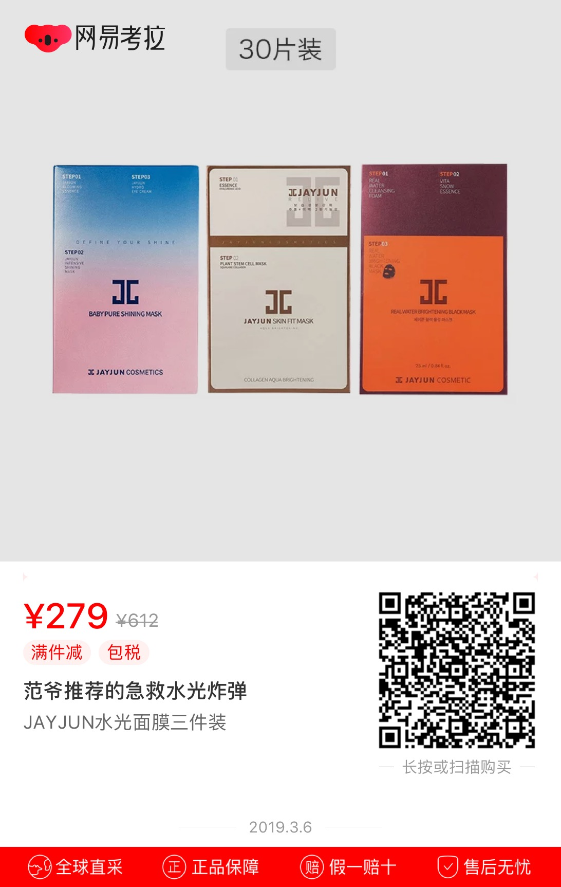

老夫聊发少年狂，左牵黄，右擎苍，锦帽貂裘，千骑卷平冈。为报倾城随太守，亲射虎，看孙郎。酒酣胸胆尚开张，鬓微霜，又何妨。持节云中，何日遣冯唐？会挽雕弓如满月，西北望，射天狼。

超级赛亚人，出自漫画家鸟山明的代表作《龙珠》，是战斗民族赛亚人特有的变身形态。据说赛亚人中每一千年才会出现一个传说中的超级赛亚人，变身条件要情绪异常愤怒，从而爆发力量。变身成功产生S细胞，拥有S细胞的下一代变身难度降低。
由于《龙珠》漫画、动画的广泛影响，“超级赛亚人”也逐渐成为网络用语，有时候形容一个人的身体素质或某些行为超乎常人也会用该词（注：本文仅统计集英社《龙珠》系列漫画及东映《龙珠》系列动画中出现的超级赛亚人。）
以上纯属测试，哈哈哈哈哈哈哈
@杭城小刘
